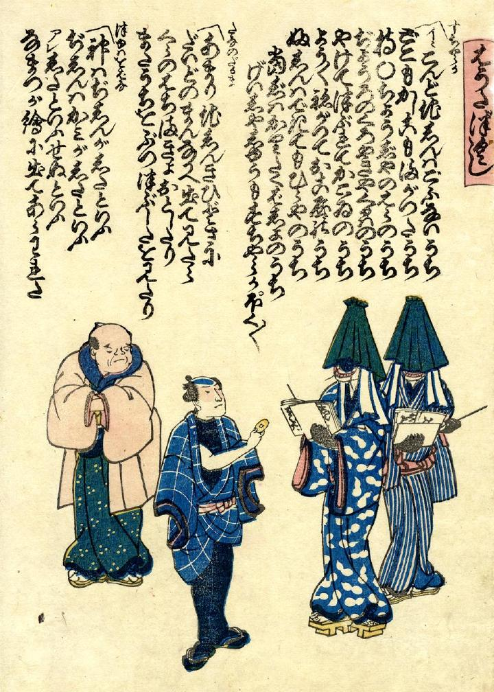

2体の鯰が震災を皮肉った端唄を歌う。頭に笠を深くかぶり、本を持っている。復興景気で儲かった職人が駄賃を与え、それを大損した丸持ち長者が嫌そうに眺めている。
出典：親書誌：U426_nichibunken_0246：はうたづくし；ハウタズクシ／日付：2011／資源識別子：U426_nichibunken_0246_0001_0000
Copyright (c)2010- International Research Center for Japanese Studies, Kyoto, Japan. All rights reserved.